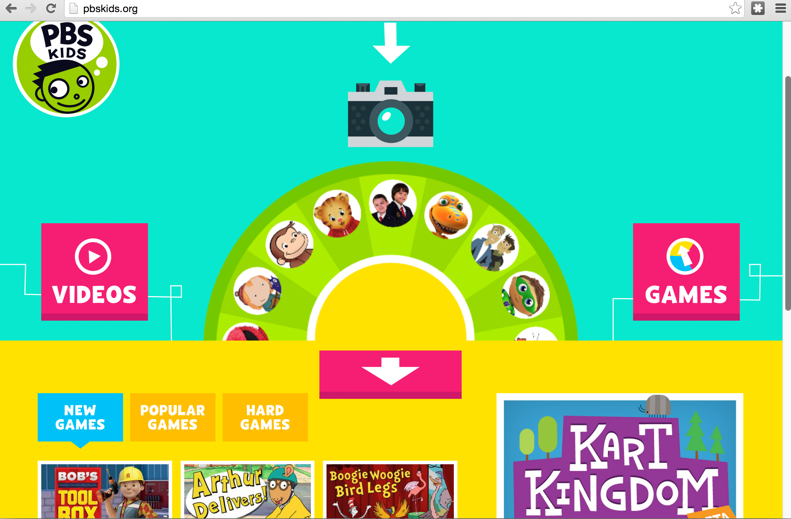

Practical Color Theory for People Who Code
Natalya Shelburne
"You are not creative, you are a technically skilled operator of a cold mechanical device"
Creative vs Technical
= false dichotomy
Whether our ideas are made visual or remain in the abstract...
Our work is creative
Design is hard work
- Looks 'easy,' but isn't
- Nothing stopping you from doing a terrible job
- Clients!
Color is Information
Find food faster
Escape predators
Notice the absence of beige
Color is our perception of Light
Researched, logical, and predictable
Art School library
>
The internet
Good info, but needs updating for the web.
Bad naming conventions: Ivory black?
Not semantic: phthalocyanine blue?!
Outdated: Indian Yellow??!!
QUICK! What is the connection between
#ff1500 & #00eaff?
The Color Wheel = Color Relationships

+ Sass! HSLa($hue, $saturation, $lightness, $alpha)
Let's see this in action
Follow Along!
tallys.github.io/color-theory
Thank you!
Practical Color Theory for People Who Code
Natalya Shelburne
tallys.github.io/color-theory